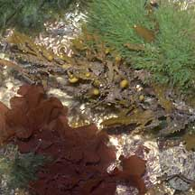
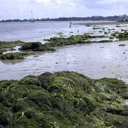
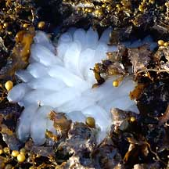

|
|
| seaweeds text index | photo index |
| Division Chlorophyta | Division Cyanophyta | Division Phaeophyta | Division Rhodophyta |
| What
are seaweeds? updated Oct 2016
What are seaweeds? Seaweeds are algae that live in the sea or in brackish water. They are also called macroalgae (which means 'big algae') to differentiate them from the microscopic algae are common in the sea. Algae are everywhere! Algae grow everywhere in the sea, in freshwater and even on land. They even grow in your bathroom, if you don't clean it often! And in your home aquarium. In the sea, large seaweeds grow attached to the ground or hard surfaces. Smaller algae grow on seagrasses or even bigger seaweeds. They also coat rocks, snail shells and other hard surfaces. Microscopic algae, also called phytoplankton, play a vital role in the sea, but are often ignored because they usually can't be seen with the naked eye. Microscopic algae is also found in soil. Macroalgae are also found in freshwater; these are usually called water weeds. How are seaweeds different from plants? Algae are very different from 'normal' land plants. Although both have chlorophyll, algae don't have true roots, stems and leaves. Algae don't have a system of channels to move water around their body (called a vascular system) that 'normal' plants do. Seaweeds can take all kinds of shapes from filaments to sheets, encrusting layers to branching forms. Seaweed parts: Although some seaweeds may look like some land plants or seagrasses, the body parts of these seaweeds work differently. So seaweed body parts are named differently. Some seaweeeds have a leaf-like portion. This is called the blade. Sometimes, reproductive structures are also found on the blade. The blade does not contain veins that transport water and nutrients, so it is not a true leaf. The blade can take on a wide variety of shapes; from flat large surfaces that resemble pieces of plastic bags; to narrow strips, hairy filaments or thick juicy tubes. The stem-like portion that holds up the blade is called the stipe. The part that anchors the seaweed is called the holdfast and not the root. The holdfast simply grips the surface and does not absorb nutrients or grow extensively into the ground like true roots do. The whole seaweed is called the thallus. Unlike land plants, photosynthesis takes place in all parts of the seaweed and not just the 'leafy' parts. Nutrients are also absorbed with all parts of the seaweed. Sometimes confused with seagrasses. Green seaweeds are easily confused for seagrasses. Here's more on how to apart seagrasses and green seaweeds. Why are seaweeds slimy? A slimy coating reduces water loss when exposed at low tide. Being leathery also helps. Some seaweeds are hard or crunchy because calcium carbonate is incorporated into the thallus. Grazers may also be deterred by distasteful and even toxic chemicals. Blooming seaweed: Some seaweeds can grow very fast. Sometimes, one or a few species of seaweeds can suddenly be seen in vast quantities, carpeting the shores or getting washed up in huge piles. Amazingly, after a few weeks, these seaweeds can just as suddenly disappear. They are then not seen in huge quantities again for some months. Various species seem to 'take turns' blooming and dominating the shore at different times of the year. These 'blooms' may be due to changes in nutrients or other conditions on the shores. Tiny algae may also bloom, colouring the seawater. Red tide is a bloom of harmful algae. Seaweed reproduction: Algae do not have flowers, fruits or seeds. Instead, they have a complex method of sexual reproduction involving the formation of some kind of spore. It is usually impossible to tell if a seaweed is reproductively mature without examining it under a microscope. Seaweed can also grow from fragments of the parent plant. Role in the habitat: Unlike seagrasses, seaweeds are eaten by a wide range of creatures from snails to fish, crabs to sea urchins and special animals such as sea turtles. Small algae provide food for tiny grazers such as snails. Larger herbivores such as sea hares munch on bigger seaweeds. During a seaweed 'bloom' there can be a corresponding explosion in the number and variety of animals that eat that particular seaweed. As well as the predators that eat the seaweed-eaters. Seaweeds also provide shelter for small animals so that they can hide from their predators. Some animals like squids, cuttlefishes and octopus may also lay their egg capsules on seaweeds. Seaweeds can also affect the growth of other animals. Studies have shown that some seaweeds release chemicals that prevent coral larvae from settling down. Thus animals that eat seaweeds play a role in the balance of life on a reef. Intimate friends of algae: Many animals harbour microscopic, single-celled algae (called zooxanthallae) within their bodies. The algae undergo photosynthesis to produce food from sunlight. The food produced is shared with the host, which in return provides the algae with shelter and minerals. This symbiotic relationship between hard corals and zooxanthallae provides the corals with extra nutrition needed to build their skeletons more quickly in the clear, nutrient-poor waters of the tropics. Thus algae are important in reef building! Other animals that harbour zooxanthallae include carpet anemones and giant clams. Algae may also have a symbiotic relationship with fungus, to form lichen. Human uses: Many seaweeds are edible to humans too. You have probably eaten some seaweed recently! Extracts of seaweeds are widely used to colour, stabilise and thicken packaged food. Fresh seaweed is part of the traditional diets of many people. Seaweeds are a good source of iodine, and many species are used in traditional medications. Unfortunately, they are low in protein and other nutrients so fresh seaweed is often used merely as a garnish or side dish. Other uses of seaweeds including as fertiliser to grow food crops, and as part of livestock feed. In the past, Sea lettuce (Ulva sp.) were collected in boatloads in the Straits of Johor, washed in freshwater then cooked and fed to pigs. Some seaweeds are cultivated for commercial uses. It is estimated that around two million tonnes of marine plants (fresh weight) are consumed worldwide, valued at more than US$3billion (as at 2000). The single most valuable seaweed is probably Porphyra sp., which is used in Japanese sushi. Seaweed cultivation can be an important source of income for poor fishermen in more remote areas. More recently, there has been increasing interest and research focus on developing seaweeds as a source of biofuel. Colours of the Weed: Seaweed species are generally classified by their colours! All seaweeds have green chlorophyll, but some also have other pigments. Green seaweeds (Division Chlorophyta) are usually found closer to shore because they generally can tolerate more sun and drying out. Red seaweeds (Division Rhodophyta) can grow in deeper waters where green seaweeds may not survive. This is because their red colour allows them to photosynthesise in lower light levels. The 'Nori' used in Japanese sushi is a red seaweed (Porphyra spp.). Red seaweeds are a source of agar extracts which are used to make delicious jellies (agar-agar); and carrageenans, natural gums used to gel and stabilise food such as chocolate milk and yoghurt. Brown seaweeds (Division Phaeophyta) are more common in colder waters. They are a source of alginates used to make water-based products thicker, creamier and more stable. For example, alginates make smoother ice cream. Blue-green algae (Division Cyanophyta) form fine hair-like filaments or mats. Seaweeds species are difficult to positively identify without close examination under a microsope, especially of their reproductive parts. On this website, they are grouped by external features for convenience of display. Status and threats: Like other plants of the intertidal zone, seaweeds are affected by reclamation and human activities that result in pollution or increased sedimentation. Some human activities may actually promote seaweed growth. For example, nutrient rich water from sewage and other outflows might trigger an explosive growth of seaweeds. This, however, can result in an imbalance in the ecosystem. |
 Red, brown and green seaweeds St. John's Island, Jan 06  Various brown seaweeds Sentosa, Apr 04  Some green seaweeds are easily mistaken for seagrasses. Pulau Sekudu, Apr 06  Red encrusting coralline algae plays an important role in 'cementing' the reefs. Sentosa, Jun 05  Large piles of green seaweed sometimes form on the shores during a seasonal 'bloom'. Chek Jawa, Feb 02  Seaweeds provide shelter for small animals such as this tiny octopus Sisters Island, Jul 04  Egg capsules of a cephalopod laid on brown sargassum seaweed Pulau Semakau, Nov 05  This slug looks exactly like the green seaweed that it probably feeds on Sentosa, Nov 03  Giant clams contain zooxanthallae, microsopic algae that share products of photosynthesis with the host. Pulau Hantu, Feb 06  Hair-like cyanobacteria growing on rocks. St. John's Island, May 05 |
| Seaweeds
on Singapore shores text index and photo index of seaweeds on this site |
Links
|
|
|